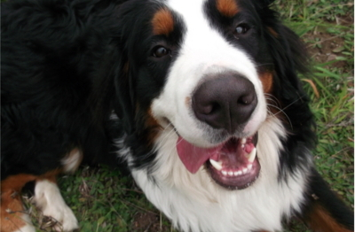

Dog Breed Information
 The Bernese Mountain Dog, is a large-sized breed of dog from the Swiss Alps. It is believed that his ancestors came to Switzerland with Roman soldiers. Berner (or Bernese in English) refers to the area of the breed’s origin, in the canton of Bern. This mountain dog was originally kept as a general farm dog and accompanied the alpine herders and dairymen. Today these dogs are very popular as family dogs. They are wonderful companions, generally easy to train, providing the owner is patient and consistent. Unfortunately the breed has many health concerns and is one of the short-lived dog breeds.
For more information check Wikipedia.